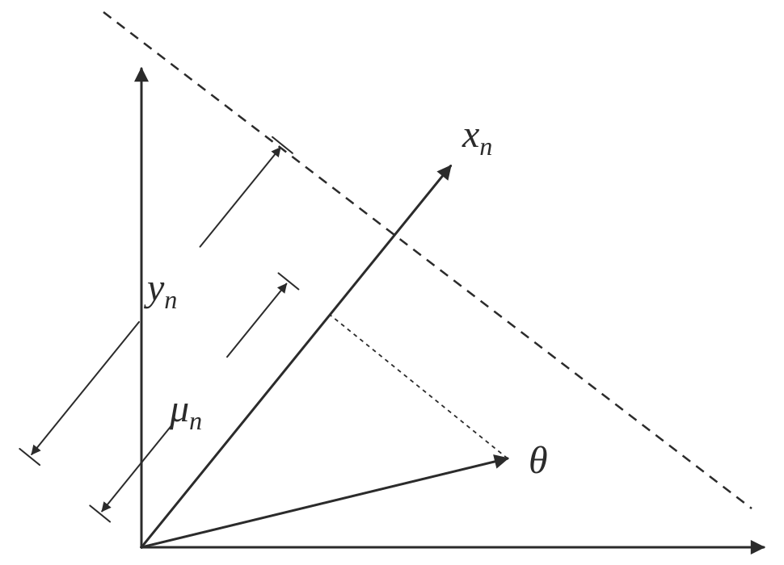
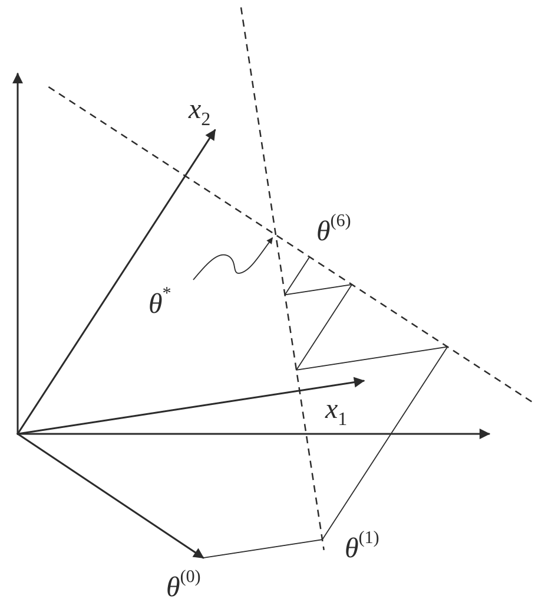
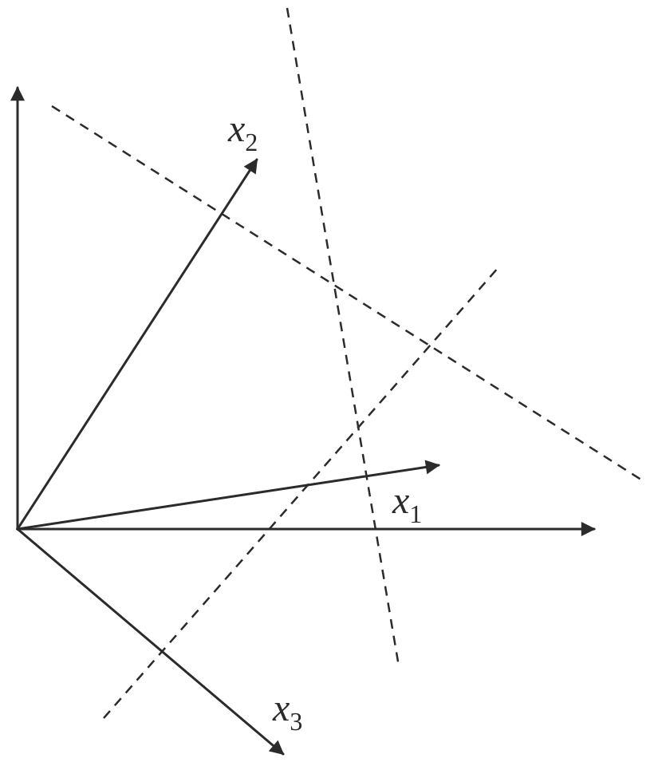
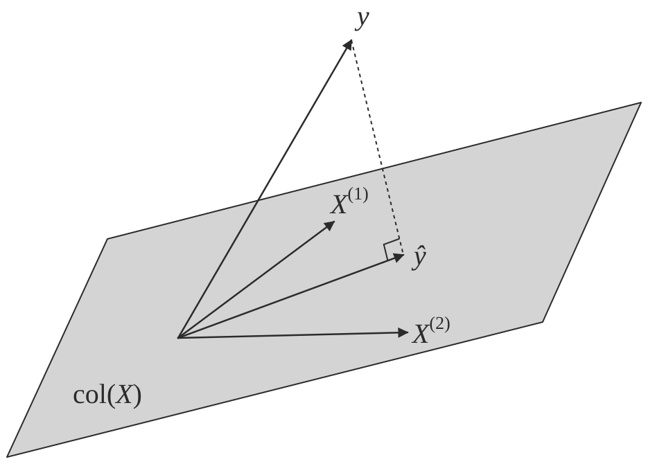

Linear models#
Material from "Statistical Models Theory and Practice" - David Freedman
About this chapter
The chapter starts from \(Y = X\beta + \epsilon\) and the least-squares solution \(\hat\theta = (X^TX)^{-1}X^TY\), shown two ways: by setting the derivative to zero, and by seeing \(HY\) as the projection of \(Y\) onto the column space of \(X\). The Freedman sections are about when this works: the assumptions behind unbiasedness and the covariance \(\sigma^2(X^TX)^{-1}\), what breaks when \(X^TX\) isn’t invertible, and the penalties that fix it.
The advanced topics loosen the model in different directions: correlated errors (GLS), non-Gaussian outcomes (GLMs), nonlinear basis functions, lowess and kernel regression, additive models, and correlated features. The chapter ends with the geometry of least squares and the LMS algorithm from Jordan’s book, and line-by-line derivations of the normal equations and the ridge solution.
Chapter outline: 6 sections
- Introduction1 interactiveLeast squares picks \beta to minimize \|Y - X\beta\|_2^2, with solution (X^TX)^{-1}X^TY.
- Freedman notes1 interactive
- Advanced topics
- Sums interpretationThree sums of squares and how they relate.
- Geometry - Jordan ch 64 figuresTwo pictures of least squares.
- Likelihood calcs
Introduction#
Least squares picks \(\beta\) to minimize \(\|Y - X\beta\|_2^2\), with solution \((X^TX)^{-1}X^TY\). The hat matrix \(H\) maps the responses to the predictions, \(\hat y = Hy\), and its diagonal entry \(H_{ii}\) measures how much point \(i\) influences the fit. The section then lists the assumptions and some variants (weighted LS, LAD).
\(Y = X \beta + \epsilon\)
type of linear regression
X
Y
simple
univariate
univariate
multiple
multivariate
univariate
multivariate
either
multivariate
generalized
either
error not normal
minimize: \(L(\theta) = \vert \vert Y-X\beta\vert \vert _2^2 \implies \hat{\theta} = (X^TX)^{-1} X^TY\)
2 proofs
set deriv and solve
use projection matrix H to show HY is proj of Y onto R(X)
the projection matrix maps the responses to the predictions: \(\hat{y} = Hy\)
define projection (hat) matrix \(H = X(X^TX)^{-1} X^T\)
show \(\vert \vert Y-X \theta\vert \vert ^2 \geq \vert \vert Y - HY\vert \vert ^2\)
key idea: subtract and add \(HY\)
interpretation
if feature correlated, weights aren’t stable / can’t be interpreted
curvature inverse \((X^TX)^{-1}\) - dictates stability
feature importance = weight * feature value
LS doesn’t work when p >> n because of colinearity of X columns
assumptions
\(\epsilon \sim N(X\beta,\sigma^2)\)
homoscedasticity: \(\text{var}(Y_i\vert X)\) is the same for all i
opposite is heteroscedasticity
normal linear regression
variance MLE \(\hat{\sigma}^2 = \sum (y_i - \hat{\theta}^T x_i)^2 / n\)
in unbiased estimator, we divide by n-p
LS has a distr. \(N(\theta, \sigma^2(X^TX)^{-1})\)
linear regression model
when n is large, LS estimator ahs approx normal distr provided that X^TX /n is approx. PSD
weighted LS: minimize \(\sum [w_i (y_i - x_i^T \theta)]^2\)
\(\hat{\theta} = (X^TWX)^{-1} X^T W Y\)
heteroscedastic normal lin reg model: erorrs ~ N(0, 1/w_i)
leverage scores - measure how much each \(x_i\) influences the LS fit
for data point i, \(H_{ii}\) is the leverage score
LAD (least absolute deviation) fit
MLE estimator when error is Laplacian
Freedman notes#
Regularization#
Both penalties keep the squared-error fit and add a cost on the size of \(\beta\). Ridge uses \(\|\beta\|_2^2\) and has a closed form; lasso uses \(\|\beta\|_1\), needs an iterative solver, and sets coefficients exactly to 0.
when \((X^T X)\) isn’t invertible can’t use normal equations and gradient descent is likely unstable
X is nxp, usually n >> p and X almost always has rank p
problems when n < p
intuitive way to fix this problem is to reduce p by getting rid of features
a lot of papers assume your data is already zero-centered
conventionally don’t regularize the intercept term
ridge regression (L2)
if \(X^T X\) is not invertible, add a small element to diagonal
then it becomes invertible
small lambda -> numerical solution is unstable
proof of why it’s invertible is difficult
argmin \(\cblue{\sum_i (y_i - \hat{y_i})^2}+ \corange{\lambda \vert \vert \beta\vert \vert _2^2}\)
equivalent to minimizing \(\sum_i (y_i - \hat{y_i})^2\) s.t. \(\sum_j \beta_j^2 \leq t\)
solution is \(\hat{\beta_\lambda} = (X^TX+\corange{\lambda I})^{-1} X^T y\)
for small \(\lambda\) numerical solution is unstable
When \(X^TX=I\), \(\beta _{Ridge} = \frac{1}{1+\lambda} \beta_{Least Squares}\)
lasso regression (L1)
\(\cblue{\sum_i (y_i - \hat{y_i})^2}+\corange{\lambda \vert \vert \beta\vert \vert _1}\)
equivalent to minimizing \(\sum_i (y_i - \hat{y_i})^2\) s.t. \(\sum_j \vert \beta_j\vert \leq t\)
lasso - least absolute shrinkage and selection operator - L1
acts in a nonlinear manner on the outcome y
keep the same SSE loss function, but add constraint of L1 norm
doesn’t have closed form for Beta
because of the absolute value, gradient doesn’t exist
can use directional derivatives
good solver is LARS - least angle regression
if tuning parameter is chosen well, will set lots of coordinates to 0
convex functions / convex sets (like circle) are easier to solve
disadvantages
if p>n, lasso selects at most n variables
if pairwise correlations are very high, lasso only selects one variable
elastic net - hybrid of the other two
\(\beta_{Naive ENet} = \cblue{\sum_i (y_i - \hat{y_i})^2}+\corange{\lambda_1 \vert \vert \beta\vert \vert _1} + \cgreen{\lambda_2 \vert \vert \beta\vert \vert _2^2}\)
l1 part generates sparse model
l2 part encourages grouping effect, stabilizes l1 regularization path
grouping effect - group of highly correlated features should all be selected
naive elastic net has too much shrinkage so we scale \(\beta_{ENet} = (1+\lambda_2) \beta_{NaiveENet}\)
to solve, fix l2 and solve lasso
The regression line (freedman ch 2)#
With one predictor the regression line goes through \((\bar x, \bar y)\) with slope \(r s_y/s_x\). The SD line has slope \(\pm s_y/s_x\), so the regression line is flatter whenever \(|r| < 1\), and its MSE is \((1-r^2)Var(Y)\).
regression line
goes through \((\bar{x}, \bar{y})\)
slope: \(r s_y / s_x\)
intercept: \(\bar{y} - slope \cdot \bar{x}\)
basically fits graph of averages (minimizes MSE)
SD line
same except slope: \(\operatorname{sign}(r) s_y / s_x\)
intercept changes accordingly
for regression, MSE = \((1-r^2) Var(Y)\)
Multiple regression (freedman ch 4)#
Freedman’s assumptions for OLS and what they buy: conditional unbiasedness, the covariance formula, and an unbiased estimate of \(\sigma^2\) that divides by \(n-p\). The hat matrix \(H\) projects \(Y\) onto the column space of \(X\), so the residuals are orthogonal to \(X\).
assumptions
assume \(n > p\) and X has full rank (rank p - columns are linearly independent)
\(\epsilon_i\) are iid, mean 0, variance \(\sigma^2\)
\(\epsilon\) independent of \(X\)
\(e_i\) still orthogonal to \(X\)
OLS is conditionally unbiased
\(E[\hat{\theta} \vert X] = \theta\)
\(Cov(\hat{\theta}\vert X) = \sigma^2 (X^TX)^{-1}\)
\(\hat{\sigma^2} = \frac{1}{n-p} \sum_i e_i^2\)
this is unbiased - just dividing by n is too small since we have minimized \(e_i\) so their variance is lower than var of \(\epsilon_i\)
random errors \(\epsilon\)
residuals \(e\)
\(H = X(X^TX)^{-1} X^T\)
e = (I-H)Y = \((I-H) \epsilon\)
H is symmetric
\(H^2 = H, (I-H)^2 = I-H\)
HX = X
\(e \perp X\)
basically H projects Y int R(X)
\(E[\hat{\sigma^2}\vert X] = \sigma^2\)
random errs don’t need to be normal
variance
\(\cpurple{var(Y)} = \cblue{var(X \hat{\theta})} + \corange{var(e)}\)
\(\cblue{var(X \hat{\theta})}\) is the explained variance, \(\corange{var(e)}\) is the residual variance
fraction of variance explained: \(R^2 = \cblue{var(X \hat{\theta})} / \cpurple{var(Y)}\)
like summing squares by projecting
if there is no intercept in a regression eq, \(R^2 = \vert \vert \hat{Y}\vert \vert ^2 / \vert \vert Y\vert \vert ^2\)
Advanced topics#
BLUE#
The Gauss-Markov theorem needs less than independent normal errors: mean 0 and covariance \(\sigma^2 I\) given \(X\). Under these, OLS has the smallest variance among linear unbiased estimators.
drop assumption: \(\epsilon\) independent of \(X\)
instead: \(E[\epsilon\vert X]=0, cov[\epsilon\vert X] = \sigma^2 I\)
can rewrite: \(E[\epsilon]=0, cov[\epsilon] = \sigma^2 I\) fixing X
Gauss-markov thm - assume linear model and assumption above: when X is fixed, OLS estimator is BLUE = best linear unbiased estimator
has smallest variance.
prove this
GLS = GLM#
Two separate relaxations share this section. GLMs change the distribution of \(Y\) and tie its mean to \(w^Tx\) through a link function. GLS keeps the linear model but allows the errors a general covariance \(G\); rescaling by \(G^{-1/2}\) makes OLS BLUE again.
GLMs roughly solve the problem where outcomes are non-Gaussian
mean is related to \(w^tx\) through a link function (ex. logistic reg assumes sigmoid)
also assume different prob distr on Y (ex. logistic reg assumes Bernoulli)
generalized least squares regression model: instead of above assumption, use \(E[\epsilon\vert X]=0, cov[\epsilon\vert X] = G, \: G \in S^K_{++}\)
covariance formula changes: \(cov(\hat{\theta}_{OLS}\vert X) = (X^TX)^{-1} X^TGX(X^TX)^{-1}\)
estimator is the same, but is no longer BLUE - can correct for this: \((G^{-1/2}Y) = (G^{-1/2}X)\theta + (G^{-1/2}\epsilon)\)
feasible GLS=Aitken estimator - use \(\hat{G}\)
examples
simple
iteratively reweighted
3 assumptions can break down:
if \(E[\epsilon\vert X] \neq 0\) - GLS estimator is biased
else if \(cov(\epsilon\vert X) \neq G\) - GLS unbiased, but covariance formula breaks down
if G from data, but violates estimation procedure, estimator will be misealding estimate of cov
Path models#
path model - graphical way to represent a regression equation
making causal inferences by regression requires a response schedule
Simultaneous equations#
simultaneous-equation models - use instrumental variables / two-stage least squares
these techniques avoid simultaneity bias = endogeneity bias
Binary variables#
Categorical predictors enter as 0/1 indicator columns. One level is dropped as the baseline, since otherwise the matrix is singular. An interaction term \(x_{i1}x_{i2}\) allows one predictor’s effect to depend on the other.
indicator variables take on the value 0 or 1
dummy coding - matrix is singular so we drop the last indicator variable - called reference class / baseline class
effect coding
one vector is all -1s
B_0 should be weighted average of the class averages
orthogonal coding
additive effects assume that each predictor’s effect on the response does not depend on the value of the other predictor (as long as the other one was fixed
assume they have the same slope
interaction effects allow the effect of one predictor on the response to depend on the values of other predictors.
\(y_i = β_0 + β_1x_{i1} + β_2x_{i2} + β_3x_{i1}x_{i2} + ε_i\)
LR with non-linear basis functions#
The model stays linear in the parameters while the features become nonlinear functions of \(x\), such as polynomials or Gaussian radial basis functions.
can have nonlinear basis functions (ex. polynomial regression)
radial basis function - ex. kernel function (Gaussian RBF)
\(\exp(-(x-r)^2 / (2 \lambda ^2))\)
non-parametric algorithm - don’t get any parameters theta; must keep data
Locally weighted LR (lowess)#
recompute model for each target point
instead of minimizing SSE, we minimize SSE weighted by each observation’s closeness to the sample we want to query
Kernel regression#
Plug kernel density estimates of \(f(x,y)\) and \(f(x)\) into \(E(Y\vert X=x) = \int y f(x,y)/f(x)\,dy\). The integral collapses to a weighted average of the \(y_i\) with weights \(K_h(x - x_i)\).
nonparametric method
\(\operatorname{E}(Y \vert X=x) = \int y f(y\vert x) dy = \int y \frac{f(x,y)}{f(x)} dy\)
Using the kernel density estimation for the joint distribution ‘’f(x,y)’’ and ‘’f(x)’’ with a kernel ‘’’’’K’’’’’,
\(\hat{f}(x,y) = \frac{1}{n}\sum_{i=1}^{n} K_h\left(x-x_i\right) K_h\left(y-y_i\right)\) \(\hat{f}(x) = \frac{1}{n} \sum_{i=1}^{n} K_h\left(x-x_i\right)\)
we get
\[\begin{split}\begin{align} \operatorname{\hat E}(Y \vert X=x) &= \int \frac{y \sum_{i=1}^{n} K_h\left(x-x_i\right) K_h\left(y-y_i\right)}{\sum_{j=1}^{n} K_h\left(x-x_j\right)} dy,\\ &= \frac{\sum_{i=1}^{n} K_h\left(x-x_i\right) \int y \, K_h\left(y-y_i\right) dy}{\sum_{j=1}^{n} K_h\left(x-x_j\right)},\\ &= \frac{\sum_{i=1}^{n} K_h\left(x-x_i\right) y_i}{\sum_{j=1}^{n} K_h\left(x-x_j\right)},\end{align}\end{split}\]
GAM = generalized additive model#
A GAM keeps additivity but drops linearity: the mean, through a link \(g\), is a sum of one function per variable, each learned with splines. Interaction terms can be added back one at a time.
generalized additive models: assume mean output is sum of functions of individual variables (no interactions)
learn individual functions using splines
\(g(\mu) = b + f(x_0) + f(x_1) + f(x_2) + ...\)
can also add some interaction terms (e.g. \(f(x_0, x_1)\))
Multicollinearity#
With highly correlated predictors, fitted coefficients can change size or even flip sign. VIF measures this for each feature. The papers below select variables in this setting, by screening on marginal regressions or by reweighting the lasso.
multicollinearity - predictors highly correlated
this affects fitted coefficients, potentially changing their values and even flipping their sign
variance inflation factor (VIF) for a feature \(X_j\) is \(\frac{1}{1-R_j^2}\), where \(R_j^2\) is obtained by predicting \(X_j\) from all features excluding \(X_j\)
this measures the impact of multicollinearity on a feature coefficient
Studying
Variable Selection via Nonconcave Penalized Likelihood and Its Oracle Properties (fan & li, 2001) - frame an estimator as “oracle” if:
it can correctly select the nonzero coefficients in a model with prob converging to one
and if the nonzero coefficients are asymptotically normal
AdaLasso: The Adaptive Lasso and Its Oracle Properties (zou, 2006)
can make lasso “”oracle” in the sense above by weighting each coef in the optimization
appropriate weight for each feature \(X_j\) is simply \(1/ \hat{\beta_j}\), where we attain \(\beta_j\) from fitting OLS with no weights
using marginal regression
A Comparison of the Lasso and Marginal Regression (genovese…yao, 2011)
Revisiting Marginal Regression (genovese, jin, & wasserman, 2009)
Exact Post Model Selection Inference for Marginal Screening (jason lee & taylor, 2014)
SIS: Sure independence screening for ultrahigh dimensional feature space (fan & lv, 2008, 2k+ citations)
2 steps (sometimes iterate these)
Feature selection - select marginal features with largest absolute coefs (pick some threshold)
Fit Lasso on selected features
Followups
Sure independence screening in generalized linear models with NP-dimensionality (fan & song, 2010)
Nonparametric independence screening in sparse ultra-high-dimensional additive models (fan, feng, & song, 2011)
RAR: Regularization after retention in ultrahigh dimensional linear regression models (weng, feng, & qiao, 2017) - only apply regularization on features not identified to be marginally important
Regularization After Marginal Learning for Ultra-High Dimensional Regression Models (feng & yu, 2017) - introduces 3-step procedure using a retention set, noise set, and undetermined set
Sums interpretation#
Three sums of squares and how they relate. The total variation in \(y\) splits into the part explained by the predictors and the residual part, and \(R^2\) is the explained share.
SST - total sum of squares - measure of total variation in response variable
\(\sum(y_i-\bar{y})^2\)
SSR - regression sum of squares - measure of variation explained by predictors
\(\sum(\hat{y_i}-\bar{y})^2\)
SSE - measure of variation not explained by predictors
\(\sum(y_i-\hat{y_i})^2\)
SST = SSR + SSE
\(R^2 = \frac{\cblue{SSR}}{\cpurple{SST}}\) - coefficient of determination
measures the proportion of variation in Y that is explained by the predictor
Geometry - Jordan ch 6#
Two pictures of least squares. In parameter space, each data point defines a line of exact solutions and LMS steps toward it. In data space, the fit \(\hat y\) is the orthogonal projection of \(y\) onto the column space of \(X\).
from Michael Jordan’s “An Introduction to Probabilistic Graphical Models”
LMS = least mean squares (p-dimensional geometries)

Fig. 20 Figure 1. LMS for one data point. The dashed line is every \(\theta\) whose projection onto \(x_n\) equals \(y_n\), the exact solutions for that point.#
\(y_n = \theta^T x_n + \epsilon_n\)
\(\theta^{(t+1)}=\cblue{\theta^{(t)}} + \corange{\alpha} \cgreen{(y_n - \theta^{(t)T} x_n)} x_n\)
old weights + step size * prediction error * input
converges if \(0 < \corange{\alpha} < 2/\vert \vert x_n\vert \vert ^2\)
geometry of LMS with two input vectors \(x_1\) and \(x_2\), each with a line of solutions; the lines intersect at \(\theta^*\), which solves the problem for both, and the path shows LMS on repeated presentations of \(x_1\) and \(x_2\)

Fig. 21 Figure 2. With two inputs the solution lines meet at \(\theta^*\). LMS alternates between them and zig-zags toward it.#

Fig. 22 Figure 3. With three inputs in two dimensions the lines meet pairwise but share no point, so no \(\theta\) fits all three exactly.#
if N=p and all \(x^{(i)}\) are lin. indepedent, then there exists exact solution \(\theta\)
solving requires finding orthogonal projection of y on column space of X (n-dimensional geometries)

Fig. 23 Figure 4. Least squares as projection. \(\hat y\) is the point of col(X) closest to \(y\), and the residual \(y - \hat y\) is orthogonal to the plane.#
3 Pfs
geometry - \(y-X\theta^*\) must be orthogonal to columns of X: \(X^T(y-X\theta)=0\)
minimize least square cost function and differentiate
show HY projects Y onto col(X)
either of these approaches yield the normal eqns: \(X^TX \theta^* = X^Ty\)
SGD
SGD converges to normal eqn
convergence analysis: requires \(0 < \rho < 2/\lambda_{\max} [X^TX]\)
algebraic analysis: expand \(\theta^{(t+1)}\) and take \(t \to \infty\)
geometric convergence analysis: consider contours of loss function
weighted least squares: \(J(\theta)=\frac{1}{2}\sum_n w_n (y_n - \theta^T x_n)^2\)
yields \(X^T WX \theta^* = X^T Wy\)
probabilistic interpretation
\(p(y\vert x, \theta) = \frac{1}{(2\pi\sigma^2)^{N/2}} \exp \left( \frac{-1}{2\sigma^2} \cblue{\sum_{n=1}^N (y_n - \theta^T x_n)^2} \right)\)
\(l(\theta; x,y) = - \frac{1}{2\sigma^2} \cblue{\sum_{n=1}^N (y_n - \theta^T x_n)^2}\)
log-likelihood is equivalent to least-squares cost function


Likelihood calcs#
Normal equation#
Expand the squared loss, differentiate and set the gradient to zero. The result is the normal equations \(X^TX\theta = X^Ty\).
\(L(\theta) = \frac{1}{2} \sum_{i=1}^n (\hat{y}_i-y_i)^2\)
\(L(\theta) = 1/2 (X \theta - y)^T (X \theta -y)\)
\(L(\theta) = 1/2 (\theta^T X^T - y^T) (X \theta -y)\)
\(L(\theta) = 1/2 (\theta^T X^T X \theta - 2 \theta^T X^T y +y^T y)\)
\(0=\frac{\partial L}{\partial \theta} = 2X^TX\theta - 2X^T y\)
\(X^Ty=X^TX\theta\)
\(\theta = (X^TX)^{-1} X^Ty\)
Ridge regression#
The same steps with the penalty added. It contributes \(2\lambda\theta\) to the gradient, which puts \(\lambda I\) on the diagonal of \(X^TX\).
\(L(\theta) = \cblue{\sum_{i=1}^n (\hat{y}_i-y_i)^2}+ \corange{\lambda \vert \vert \theta\vert \vert _2^2}\)
\(L(\theta) = \cblue{(X \theta - y)^T (X \theta -y)}+ \corange{\lambda \theta^T \theta}\)
\(L(\theta) = \cblue{\theta^T X^T X \theta - 2 \theta^T X^T y +y^T y} + \corange{\lambda \theta^T \theta}\)
\(0=\frac{\partial L}{\partial \theta} = \cblue{2X^TX\theta - 2X^T y}+\corange{2\lambda \theta}\)
\(\theta = (X^TX+\corange{\lambda I})^{-1} X^T y\)
data fit + penalty
Key ideas
The least-squares fit \(\hat y = Hy\) is the orthogonal projection of \(y\) onto the column space of \(X\), so the residuals are orthogonal to every column of \(X\).
Under Freedman’s assumptions OLS is unbiased with covariance \(\sigma^2(X^TX)^{-1}\), and by the Gauss-Markov theorem it is the best linear unbiased estimator.
Ridge adds \(\lambda I\) to \(X^TX\), which makes it invertible and shrinks every coefficient; the lasso’s \(\ell_1\) penalty sets some coefficients exactly to 0.
Correlated features make coefficients unstable, and the VIF \(1/(1-R_j^2)\) measures how much for each feature.
Lowess, kernel regression and GAMs drop the global linear form, fitting local weighted averages or sums of one-variable functions.
With Gaussian errors, maximizing the log-likelihood is the same as minimizing the squared error.